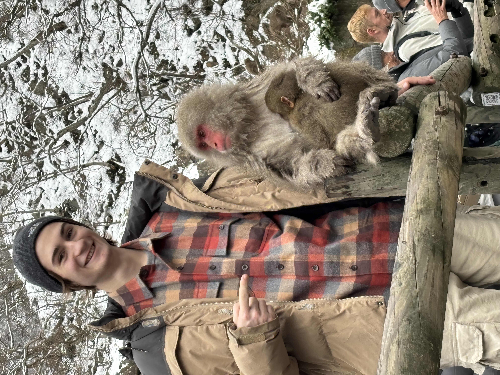
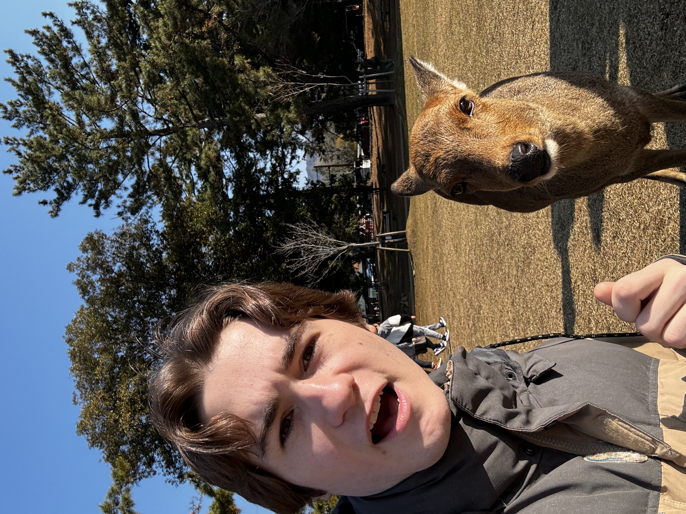
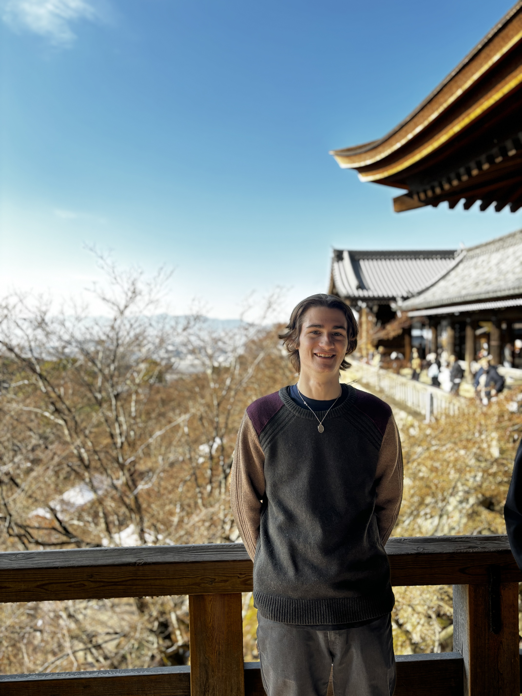
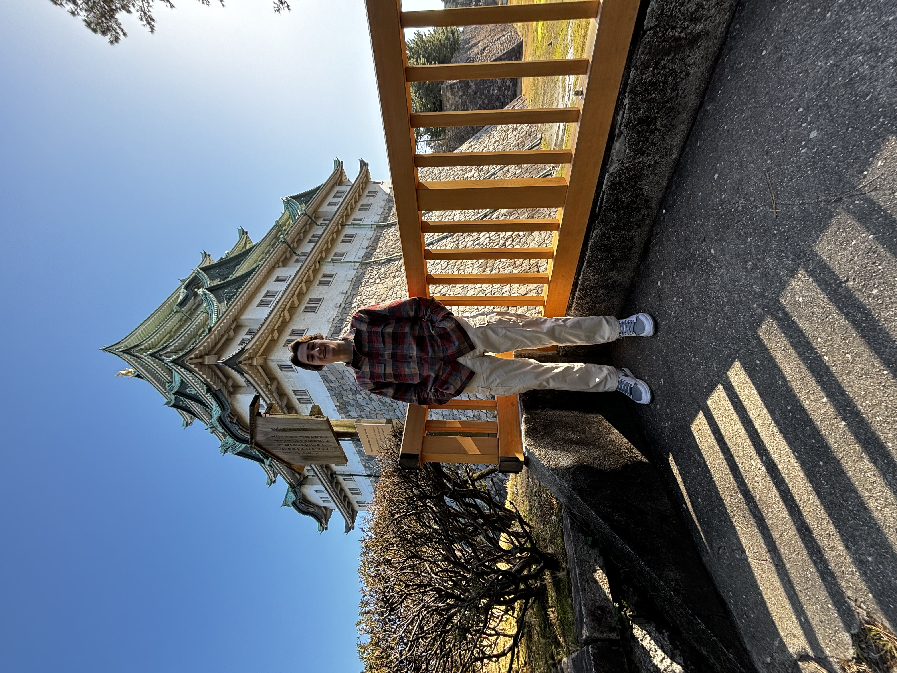

Hakuba, Japan

Hakuba, Japan is a small skiing village in the Nagano region on Honshu. Nagano was the home of the 1998 Winter Olympics, with Hakuba serving as the home for ski jump among other events. The town is home to a multitude of different ski slopes, so make sure to try them all!
I recently went to Hakuba over the winter break of 2023. I personally went to 2 different ski slopes, Hakuba 47 and Happo ONE. While I'm not the most advanced skier, both resorts had plenty of intermediate to advanced runs that would be great for anyone who has skied before.
Snow Monkey Park, Nagano, Japan
Jigokudani Monkey Park is home to a very special troop of monkeys. Created in 1964, the park was established as a conservation area in which the monkeys, Japanese macaques to be exact, would have a refuge within what was already their natural habitat. Once in the park, the naturally-curious monkeys observed humans using the hot spring of a nearby guesthouse and before long, started copying the behaviour.
When I went to visit the snow monkeys, I was shocked at how comfortable and close the monkeys would get to the tourists. They seemed totally unbothered when you would walk by them, and wouldn't pay any mind when you would try and get them to look your way for a photo. However, as soon as you approach them, they would show that they're still wild and run for the hot springs or the mountains nearby.
Nara, Japan
Nara Park (奈良公園, Nara Kōen) is a large park in central Nara. Established in 1880, it is the location of many of Nara's main attractions including Todaiji, Kasuga Taisha, Kofukuji and the Nara National Museum. It is also home to hundreds of freely roaming deer.
The Nara deer were one of my favorite parts of my trip to Japan. They were so friendly and wouldn't bat an eye as you walk by them. If you are holding a rice cracker and bow before them, they will bow back and expect the cracker as payment! They also would wait at crosswalks for the light to turn green like your normal citizen.
Kiyomizudera, Kyoto, Japan
Kiyomizudera (清水寺, literally "Pure Water Temple") is one of the most celebrated temples of Japan. It was founded in 780 on the site of the Otowa Waterfall in the wooded hills east of Kyoto, and derives its name from the fall's pure waters. The temple was originally associated with the Hosso sect, one of the oldest schools within Japanese Buddhism, but formed its own Kita Hosso sect in 1965. In 1994, the temple was added to the list of UNESCO world heritage sites.
Visiting Kiyomizudera (Clear water temple) was a really cool moment for me because I had seen it many times in Japanese media and heard about its beauty and cultural significance for a long time. Now that I have been, I can confirm that it is a must see if visiting Kyoto. Be sure to try drinking the waters, located below the famed wooden balcony, that give the temple it's name.
Nagoya Castle, Japan
Nagoya Castle was completed in 1615 by the Shogun, Tokugawa Ieyasu. Topped with golden shachihoko, votive tiger-fish roof devices, and boasting the largest floorspace of any tower keep, Nagoya Castle and its magnificent Hommaru Palace were operated as a military facility. Nagoya Castle was Japan’s first castle to be designated a National Treasure.
Visiting the Nagoya Castle was a really big moment for me, as I was in fact born in Nagoya, Japan! This was my first time going back to both the country and the city where I was born, so this moment held a lot of significance for me. It really was a beautiful place and I would highly recommend visiting if you're ever in the area.